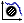
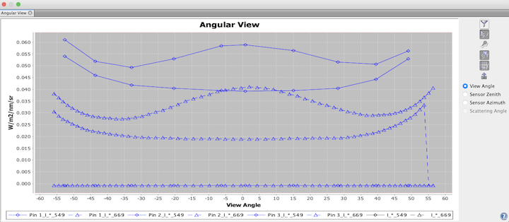

|
|
|
If you have opened a data product which contains angular bands, you can use the angular view
to inspect the spectra for a given pixel position.
A click on the

icon in the main toolbar or selecting "Angular View"
from the View --> Tool Windows menu opens a view which will look similar to this one:

If you now move the mouse cursor over an image view, the angular view will display the spectra
for the current pixel position.
Note that the angular view can only display the intensities of angular bands.
The angular view will remain empty for products without any angular bands.
By clicking  you open the Angular Band Chooser
which allows you to define which spectra or bands to show.
You can also use the Angular Band Chooser to change the symbol and line style
of a angular view.
you open the Angular Band Chooser
which allows you to define which spectra or bands to show.
You can also use the Angular Band Chooser to change the symbol and line style
of a angular view.
You can click & drag the mouse in the diagram in order to display the value of the selected angular view graph at a pin position (see screenshot above).
While you move the mouse cursor around a region in the image, you will notice that the diagram axes are automatically adjusted according to the min/max values of the displayed angular band values.
Tip: If you press the SHIFT key while moving the mouse cursor, the Sentinel Toolbox adjusts the axes to the local
values at the current pixel position, if you release the SHIFT key again, then the min/max are accumulated
again.
A click with the right mouse button on the diagram brings up a context menu which consists of the following menu items:
SHIFT key pressed.
In the following the tool buttons of the angular view are explained.
| Opens the Angular Band Chooser, which allows you to choose which spectra and bands to display and to alter their appearance. | |
| Toggles the visibility of the cursor angular view. | |
| Toggles the visibility of the spectra of the selected pins. | |
| Toggles the visibility of all pin spectra. | |
| Switches the grid lines of the diagram on and off. | |
Exports the spectra to a .csv file. |
|
| Displays this help page. |